Purpose: Design a functioning audio amp that will
amplify the ESP32s output signal
Component or tool: KiCAD 9.0.4; DigiKey (IC
selection)
Result: Built the full audio amp schematic
Team contribution: Completed what I could before
going to work. MR worked on integrating it into the final set of
schematics.
Accelerometer Selection and Schematic Design
Unfortunately due to time constraints, I cannot go into detail about
it here. I will fully explain all the design justice next week. I
completely forgot to fully fill this section out and convert it into
HTML as that takes a while, but next week I will fill this out.
Here is the final schematic design:
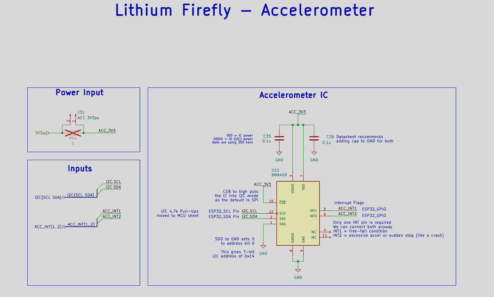
Final accelerometer schematic design
Audio Design
IC Selections
I2S IC
There are various ICs that could've been used. As seen in
Technical notes, the ESP32-S3
does not have a local DAC as it has been replaced by an I2S module.
There is a chip that could have been used:
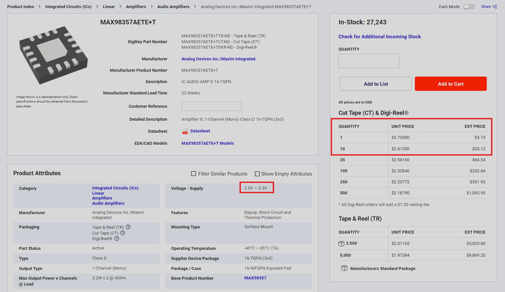
DigiKey listing for the considered I²S audio IC
The reason why this IC is nice:
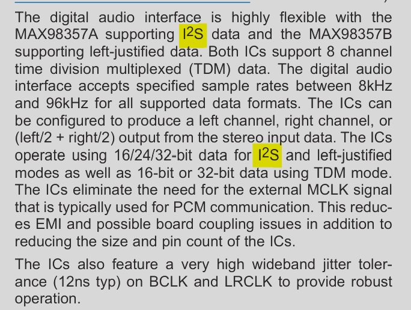
Datasheet features for the considered I²S audio IC
As seen this chip supports I2S data as it handles a DAC and everything
internally as seen in the block diagram below:
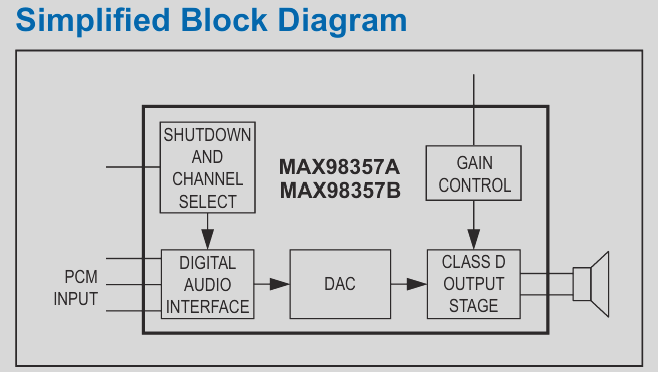
Internal block diagram of the considered I²S audio IC
However... One issue was the cost per chip. As on each board we're
planning to have one, at $2.8/10 chips is a bit high and a challenge
would be preferred, it was decided to use a traditional amplifier with
an RC filter and DAC.
So, the amplifier was selected first as RC filters were covered
heavily in semester 5, and DACs were briefly covered in Semesters 4/5.
Amplifiers were covered but I believe that selecting the last piece is
more important than a few resistors/capacitors for the filter and a
generic DAC chip.
Amplifier IC
A promising amplifier I found was: PAM8302AADCR
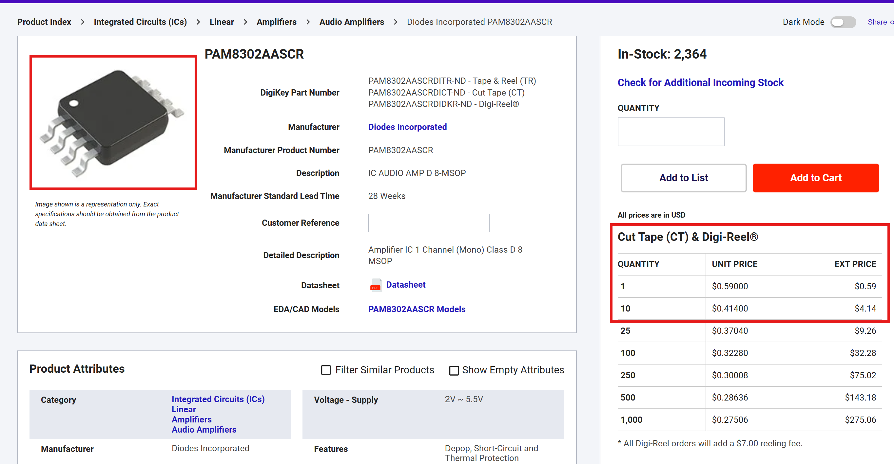
DigiKey listing for the PAM8302AADCR amplifier
Firstly, it comes in a 8-TSSOP package with little legs, making it
easier to hand-solder (compared to QFN which requires hot air;
something we don't have easy access to).
Additionally, the cost is very good as it is only
\(4.14 for 10 units - much better than nearly \)30. Even if 10 DACs end up costing $20, it is still more
cost-effective to do it this way.
For notable features itself, it features a decent 2.5W output on a 4
\(\Omega\) load at 5V. Although we're
using 3V3, I don't think we require that large of an amplification so
it should suffice.
RC Filtering
Next, I decided to implement an RC filter (LPF) to cutoff high
frequency switching sound. I aimed for about 15 kHz since 20 kHz is
too high. More on this in a second.
I decided to start with a 4.7 nF capacitor so I had to find the
resistor value. The cutoff formula is given by:
\[F_c = \frac{1}{2\pi RC}\]
Rearranging to solve for R,
\[2\pi RCF_c = 1\]
\[R = \frac{1}{2\pi CF_c}\]
Plugging our values in,
\[R = \frac{1}{2\pi (4.7 nF)(15 kHz)}\]
\[R = ~2.2k\Omega\]
I decided to copy this circuit twice over to get a stronger cutoff.
Here is the schematic:
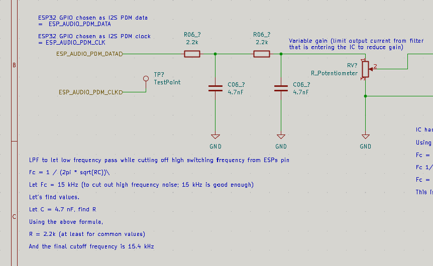
Dual RC low-pass filter schematic
The transfer function is roughly:
\[H(s) = \frac{1}{(RC)^2 + 3(RCs) + 1}\]
Looking at datasheet, we get a few useful pieces of information:
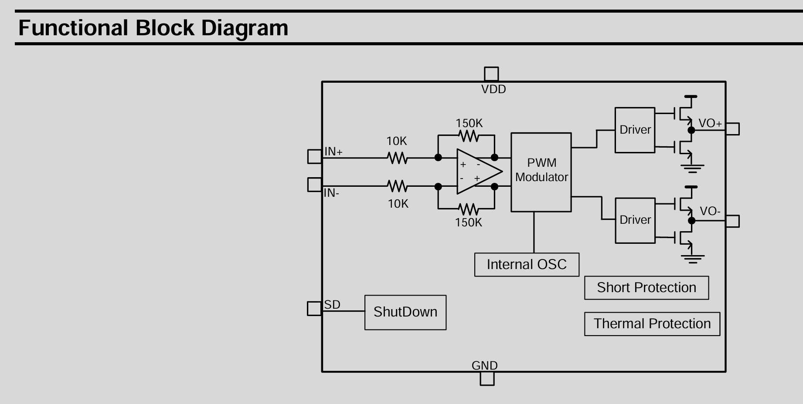
PAM8302A functional block diagram
I used this to make the overall amp schematic
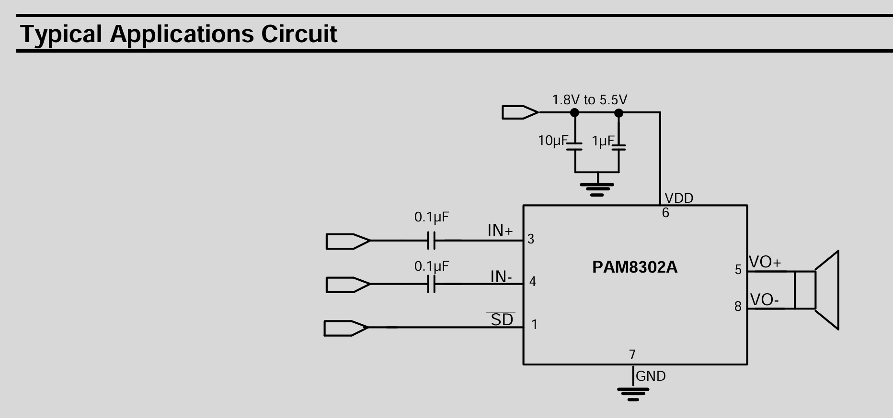
PAM8302A typical application circuit
Note, the labels are messed up as this schematic was opened outside of
the overall project. MR cleaned up our directory so I took my
schematics and moved them to another non-github folder.
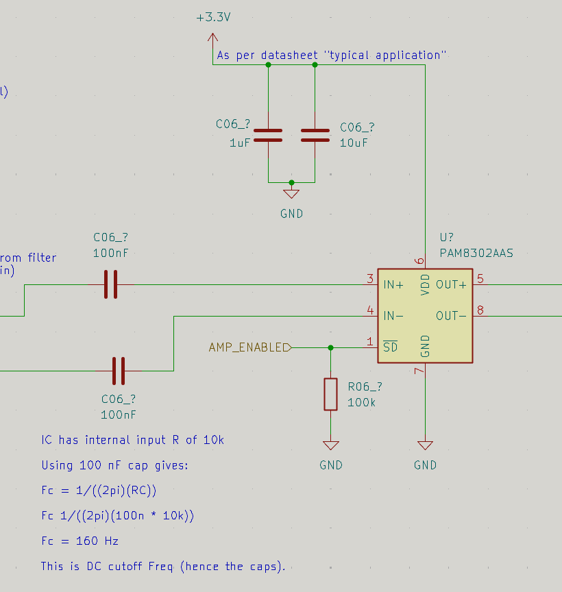
Audio amplifier schematic before integration into the main
project
The 100 nF caps work together with the internal impedance of the IC,
which is 10k as seen by the functional block diagram previously.
This gives a DC cutoff frequency:
\[F_c = \frac{1}{2\pi (10k)(100n)}\]
\[F_c = 159.15 \;Hz\]
The final implemented circuit was given by:
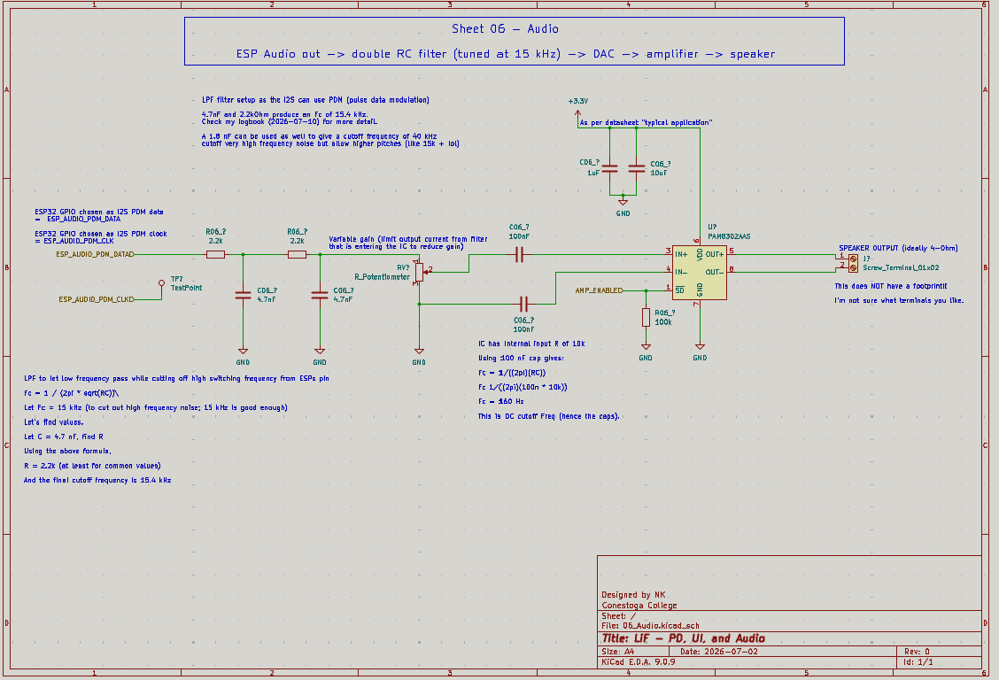
Final implemented audio amplifier circuit
There is a potentiometer in the middle, after the RC filter but before
the IC input. This is to tweak the gain.
The gain is given by:
\[20log(\frac{150k\Omega}{10k\Omega + R_{in}})\]
With a pot, the gain can change. The default gain is decent too, about
23.5 dB.
With that, the schematic was just about done. I merge my branch with
main and it went onto MR to work on it.
Technical notes
ESP32-S3's lack of a local DAC
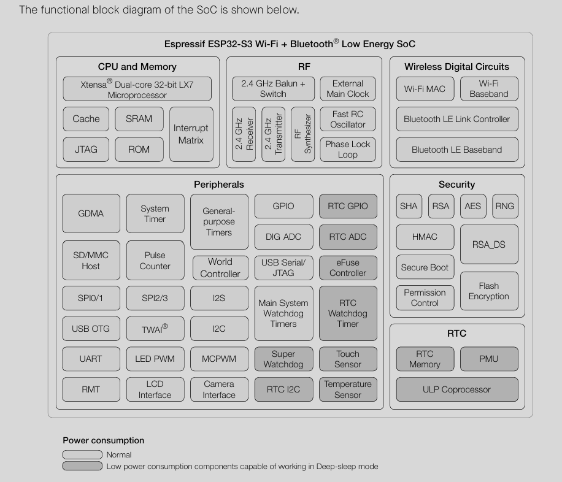
ESP32-S3 functional block diagram
The ESP32-S3 chip, which is the one we plan to use, is lacking a local
DAC and is instead using an I2S bus (?) instead. Because of this, the
chip options are limited.
Using a traditional amplifier works as well since I2S have various
configurations.